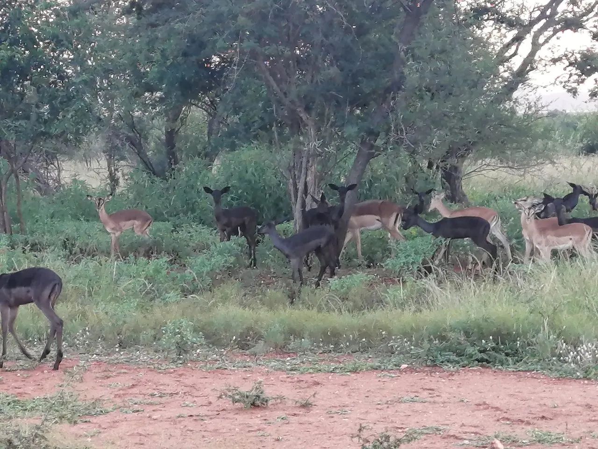
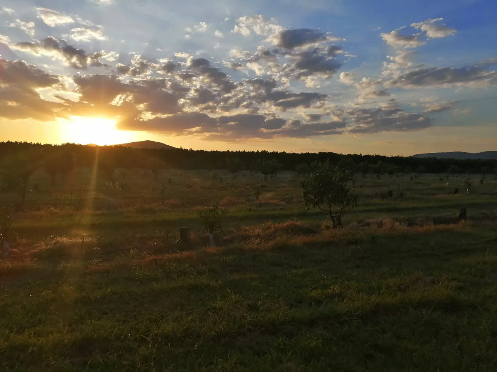
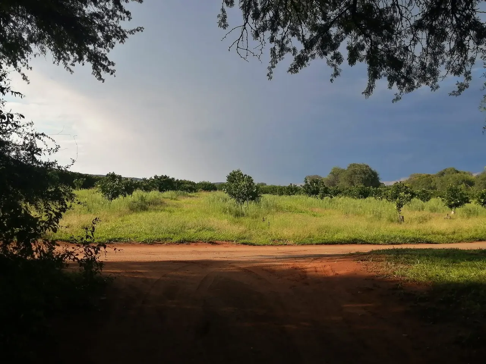
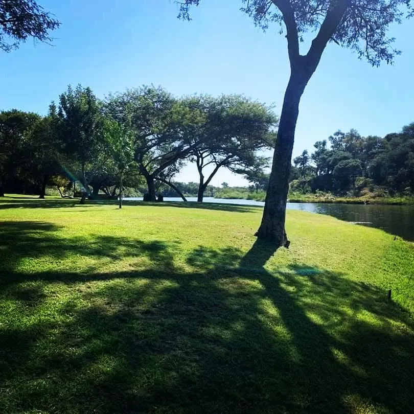
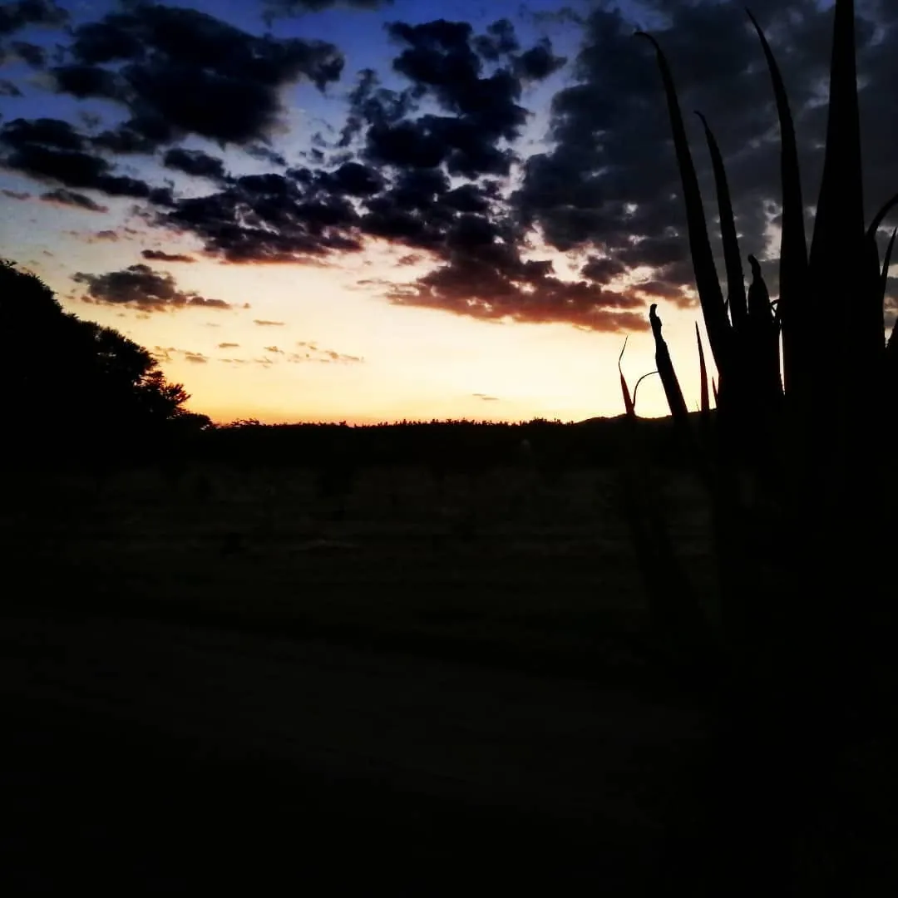

Vir groepe wat die bosveld op sy rustigste wil beleef. Die wildkamp het geen krag nie, net die bos, die sterre en die geluide van die nag.
Daar is slegs vier staanplekke en die kamp word net aan groepe verhuur. Bespreek per nag, of die hele naweek vir R3 500.
- 4 persone ingesluit, maksimum 6
- R50 per ekstra persoon
- Slegs 4 staanplekke
- Slegs groepe
- Geen krag
- R3 500 per naweek
Kyk rond.
6 foto's. Klik op 'n foto om dit groot te sien.



